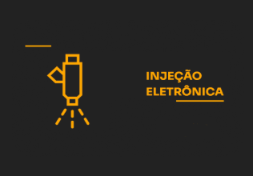

DAF AutoCenter

Injeção Eletrônica:

O que é Injeção Eletrônica? Por que fazer manutenção na injeção eletrônica?
Com o tempo, sensores e bicos injetores podem ficar sujos ou desgastados, afetando diretamente o funcionamento do carro.
Sinais de problemas na injeção eletrônica:
- Dificuldade para dar partida
- Perda de potência
- Aumento no consumo de combustível
- Luz da injeção acesa no painel
Nosso serviço de Injeção Eletrônica inclui:
- Diagnóstico eletrônico completo
- Limpeza dos bicos injetores
- Verificação de sensores e atuadores
- Teste com scanner automotivo de última geração
Traga seu carro para uma avaliação!
Chama a gente no Whatsapp: (11) 9.4038-5917 ou